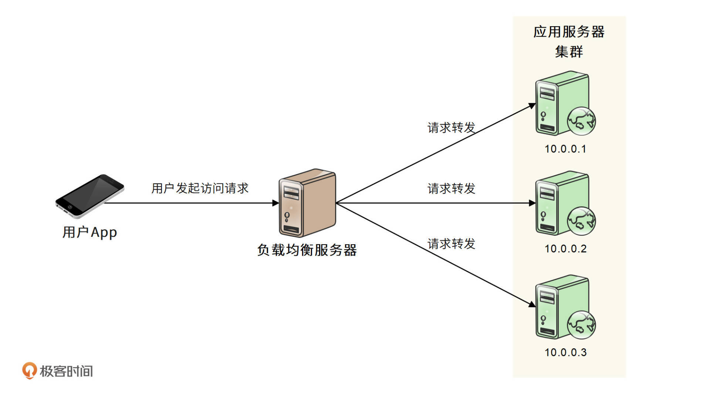
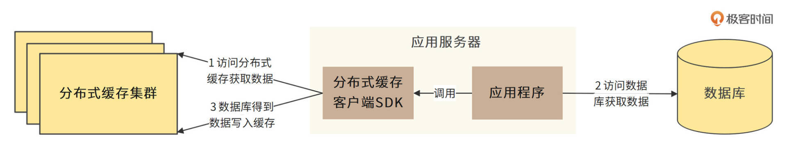
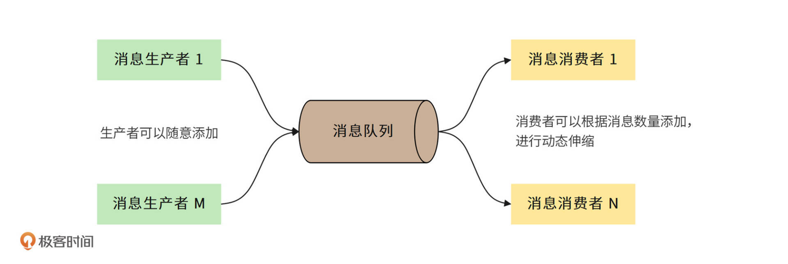
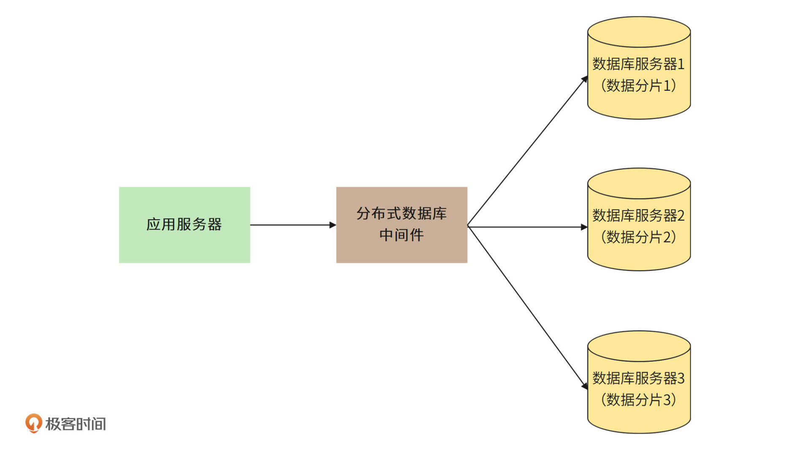
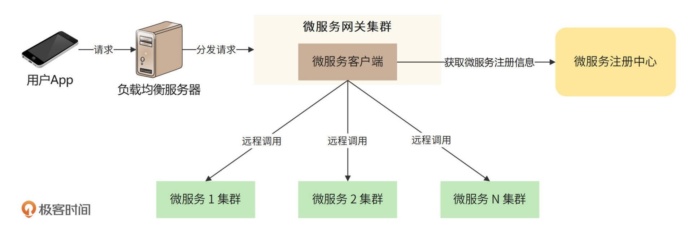

- 00 开篇词 “附身”大厂架构师，身临其境设计高并发系统.md
- 01 软件建模与文档：架构师怎样绘制系统架构蓝图？.md
- 02 高并发架构设计方法：面对高并发，怎么对症下药？.md
- 03 短 URL 生成器设计：百亿短 URL 怎样做到无冲突？.md
- 04 网页爬虫设计：如何下载千亿级网页？.md
- 05 网盘系统设计：万亿 GB 网盘如何实现秒传与限速？.md
- 06 短视频系统设计：如何支持三千万用户同时在线看视频？.md
- 07 海量数据处理技术回顾：为什么分布式会遇到 CAP 难题？.md
- 08 秒杀系统设计：你的系统可以应对万人抢购盛况吗？.md
- 09 交友系统设计：哪种地理空间邻近算法更快？.md
- 10 搜索引擎设计：信息搜索怎么避免大海捞针？.md
- 11 反应式编程框架设计：如何使方法调用无阻塞等待？.md
- 12 高性能架构的三板斧：分析系统性能问题从哪里入手？.md
- 13 微博系统设计：怎么应对热点事件的突发访问压力？.md
- 14 百科应用系统设计：机房被火烧了系统还能访问吗？.md
- 15 限流器设计：如何避免超预期的高并发压力压垮系统？.md
- 16 高可用架构的十种武器：怎么度量系统的可用性？.md
- 17 Web 应用防火墙：怎样拦截恶意用户的非法请求？.md
- 18 加解密服务平台：如何让敏感数据存储与传输更安全？.md
- 19 许可型区块链重构：无中心的区块链怎么做到可信任？.md
- 20 网约车系统设计：怎样设计一个日赚 5 亿的网约车系统？.md
- 21 网约车系统重构：如何用 DDD 重构网约车系统设计？.md
- 22 大数据平台设计：如何用数据为用户创造价值？.md
- 结束语 一个架构师的一天.md
02 高并发架构设计方法：面对高并发，怎么对症下药？
你好，我是李智慧。
我们知道，“高并发”是现在系统架构设计的核心关键词。一个架构师如果设计、开发的系统不支持高并发，那简直不好意思跟同行讨论。但事实上，在架构设计领域，高并发的历史非常短暂，这一架构特性是随着互联网，特别是移动互联网的发展才逐渐变得重要起来的。
现在有很多大型互联网应用系统，其用户是面向全球的普通大众，用户体量动辄十几亿。这些用户即使只有万分之一同时访问系统，也会产生十几万的并发访问量。
因此，高并发是现在的大型互联网系统必须面对的挑战，当同时访问系统的用户不断增加时，要消耗的系统计算资源也不断增加。所以系统需要更多的CPU和内存去处理用户的计算请求，需要更多的网络带宽去传输用户的数据，也需要更多的硬盘空间去存储用户的数据。而当消耗的资源超过了服务器资源极限的时候，服务器就会崩溃，整个系统将无法正常使用。
今天我将基于高并发系统的技术挑战，来为你介绍典型的分布式解决方案。这节课的内容，会被应用到后面的大部分实战案例中。所以我希望通过这节课，带你做个简单的预习，同时你也能对自己学过的高并发技术做个简单回顾。
我要先说明一点，今天的高并发系统架构方法比较多，但它们是殊途同归的，都要遵循一个相同的高并发应对思路。所以我们今天的首要目标就是明确这个思路到底是什么，也就是要搞清楚高并发系统架构的方法论。
高并发系统架构的方法论
高并发的技术挑战，核心就是为了满足用户的高并发访问，系统需要提供更多的计算资源。那么如何提供这些计算资源，也就是说，如何使系统的计算资源随着并发的增加而增加？
对此，人们提出各种技术解决方案，这些解决方案大致可以分成两类，一类是传统大型软件系统的技术方案，被称作垂直伸缩方案。所谓的垂直伸缩就是提升单台服务器的处理能力，比如用更快频率的CPU、更多核的CPU、更大的内存、更快的网卡、更多的磁盘组成一台服务器，从普通服务器升级到小型机，从小型机提升到中型机，从中型机提升到大型机，从而使单台服务器的处理能力得到提升。通过这种手段提升系统的处理能力。
当业务增长，用户增多，服务器计算能力无法满足要求的时候，就会用更强大的计算机。计算机越强大，处理能力越强大，当然价格也越昂贵，技术越复杂，运维越困难。
由于垂直伸缩固有的这些问题，人们又提出另一类解决方案，被称作水平伸缩方案。所谓的水平伸缩，指的是不去提升单机的处理能力，不使用更昂贵更快更厉害的硬件，而是使用更多的服务器，将这些服务器构成一个分布式集群，通过这个集群，对外统一提供服务，以此来提高系统整体的处理能力。
水平伸缩除了可以解决垂直伸缩的各种问题，还有一个天然的好处，那就是随着系统并发的增加，可以一台服务器一台服务器地添加资源，也就是说，具有更好的弹性。而这种弹性是大多数互联网应用场景所必须的。因为我们很难正确估计一个互联网应用系统究竟会有多少用户来访问，以及这些用户会在什么时候来访问。而水平伸缩的弹性可以保证不管有多少用户，不管用户什么时候来访问，只要随时添加服务器就可以了。
因此现在的大型互联网系统多采取水平伸缩方案，来应对用户的高并发访问。
高并发系统架构的方法
我们知道了分布式集群优势明显，但是将一堆服务器放在一起，用网线连起来，并不能天然地使它们构成一个系统。要想让很多台服务器构成一个整体，就需要在架构上进行设计，使用各种技术，让这些服务器成为整体系统的一个部分，将这些服务器有效地组织起来，统一提升系统的处理能力。
这些相关的技术就是高并发系统架构的主要技术方法，其核心是各种分布式技术。
分布式应用
应用服务器是处理用户请求的主要服务器，工程师开发的代码就部署在这些服务器上。在系统运行期间，每个用户请求都需要分配一个线程去处理，而每个线程又需要占用一定的CPU和内存资源。所以当高并发的用户请求到达的时候，应用服务器需要创建大量线程，消耗大量计算机资源，当这些资源不足的时候，系统就会崩溃。
解决这个问题的主要手段就是使用负载均衡服务器，将多台应用服务器构成一个分布式集群，用户请求首先到达负载均衡服务器，然后由负载均衡服务器将请求分发到不同的应用服务器上。当高并发的用户请求到达时，请求将被分摊到不同的服务器上。这样一来，每台服务器创建的线程都不会太多，占用的资源也在合理范围内，系统就会保持正常运行。
通过负载均衡服务器构建分布式应用集群如下图。

分布式缓存
系统在运行期需要获取很多数据，而这些数据主要存储在数据库中，如果每次获取数据都要到数据库访问，会给数据库造成极大的负载压力。同时数据库的数据存储在硬盘中，每次查询数据都要进行多次硬盘访问，性能也比较差。
目前常用的解决办法就是使用缓存。我们可以将数据缓存起来，每次访问数据的时候先从缓存中读取，如果缓存中没有需要的数据，才去数据库中查找。这样可以极大降低数据库的负载压力，也有效提高了获取数据的速度。同样，缓存可以通过将多台服务器够构成一个分布式集群，提升数据处理能力，如下图。

首先应用程序调用分布式缓存的客户端SDK，SDK会根据应用程序传入的key进行路由选择，从分布式缓存集群中选择一台缓存服务器进行访问。如果分布式缓存中不存在要访问的数据，应用程序就直接访问数据库，从数据库中获取数据，然后将该数据写入到缓存中。这样，下次再需要访问该数据的时候，就可以直接从缓存中得到了。
分布式消息队列
分布式消息队列是解决突发的高并发写操作问题和实现更简单的集群伸缩的一种常用技术方案。消息队列架构主要包含三个角色：消息生产者、消息队列、消息消费者，如下图。

比如我们要写数据库，可以直接由应用程序写入数据库，但是如果有突发的高并发写入请求，就会导致数据库瞬间负载压力过大，响应超时甚至数据库崩溃。
但是如果我们使用消息队列，应用程序（消息生产者）就可以将写数据库的操作，写入到消息队列中，然后由消息消费者服务器从消息队列中消费消息，根据取出来的消息将数据写入到数据库中。当有突发的高并发写入的时候，只要控制消息消费者的消费速度，就可以保证数据库的负载压力不会太大。
同时，由于消息生产者和消息消费者没有调用耦合，当我们需要增强系统的处理能力，只需要增加消息生产者或者消息消费者服务器就可以了，不需要改动任何代码，实现伸缩更加简单。
分布式关系数据库
关系数据库本身并不支持伸缩性，但是关系数据库又是存储数据最传统的手段。为了解决关系数据库存储海量数据以及提供高并发读写的问题，人们提出了将数据进行分片，再将不同分片写入到不同数据库服务器的方法。
通过这种方法，我们可以将多台服务器构建成一个分布式的关系数据库集群，从而实现数据库的伸缩性，如下图。

分布式微服务
我们前面提到的分布式应用，是在一个应用程序内部完成大部分的业务逻辑处理，然后将这个应用程序部署到一个分布式服务器集群中对外提供服务，这种架构方案被称作单体架构。与此相对应的是分布式微服务架构，这是一种目前更广为使用的架构方案，如下图。

微服务的核心思想是将单体架构中庞大的业务逻辑拆分成一些更小、更低耦合的服务，然后通过服务间的调用完成业务的处理。
具体处理过程是：用户请求通过负载均衡服务器分发给一个微服务网关集群，在网关内开发一个简单的微服务客户端，客户端调用一个或多个微服务完成业务处理，并将处理结果构造成最后的响应结果返回给用户。
微服务架构的实现需要依赖一个微服务框架，这个框架包括一个微服务注册中心和一个RPC远程调用框架。微服务客户端通过注册中心得到要调用的微服务具体的地址列表，然后通过一个软负载均衡算法选择其中一个服务器地址，再通过PRC进行远程调用。
此外，除了以上这些分布式技术，高并发系统中常用的还有大数据、分布式文件、区块链、搜索引擎、NoSQL、CDN、反向代理等技术，也都是一些非常经典的分布式技术。如果你对这些技术感兴趣，想要更详细地了解它们，那么你可以阅读我在极客时间的另两个专栏，分别是《从0开始学大数据》和《后端技术面试38讲》。
系统并发指标
我们这个专栏大部分案例都是关于高并发系统的，那么和并发相关的指标有哪些？并发量又该如何估算？首先，我们来看和并发相关的指标，主要有以下这些。
目标用户数
目标用户数是所有可能访问我们系统的潜在用户的总和，比如微信的目标用户是所有中国人，那么微信的目标用户数就是13亿。目标用户数可以反映潜在的市场规模。
系统用户数
并不是所有的目标用户都会来访问我们的系统，只有那些真正访问过我们系统的用户才被称作系统用户。越是成功的系统，系统用户数和目标用户数越接近。
活跃用户数
同样地，访问过我们系统的用户可能只是偶尔过来访问一下，甚至只访问一次就永不再来。所以我们还需要关注用户的活跃度，也就是经常来访问的用户规模有多大。如果以一个月为单位，那么一个月内只要来访问过一次，就会被统计为活跃用户，这个数目被称为月活用户数。同样地，一天内访问过的总用户数被称为日活用户数。
在线用户数
当活跃用户登录我们的系统的时候，就成为在线用户了。在线用户数就是正在使用我们系统的用户总数。
并发用户数
但在线用户也并不总是在点击App，请求我们的系统服务，他可能搜索得到一个页面，然后就在自己的手机端浏览。只有发起请求，在服务器正在处理这个请求的用户才是并发用户。事实上，高并发架构主要关注的就是用户发起请求，服务器处理请求时需要消耗的计算资源。所以并发用户数是架构设计时主要关注的指标。
在我们后续的案例分析中，我都是根据市场规模估计一个目标用户数，然后再根据产品特点、竞品数据等，逐步估算其他的用户数指标。
有了上面这些用户数指标，我们就可以进一步估算架构设计需要考虑的其他一些技术指标，比如每天需要新增的文件存储空间，存储总系统用户需要的数据库规模，总网络带宽，每秒处理的请求数等等。
技术指标估算能力是架构师的一个重要能力，有了这个能力，你才有信心用技术解决未来的问题，也会因此对未来充满信心。这个估算过程，我们会在后面的案例课中不断重复，你也可以根据你的判断，分析这些估算是否合理，还有哪些没有考虑到的、影响架构设计的指标。
小结
高并发架构的主要挑战就是大量用户请求需要使用大量的计算资源。至于如何增加计算资源，互联网应用走出了一条水平伸缩的发展道路，也就是通过构建分布式集群架构，不断向集群中添加服务器，以此来增加集群的计算资源。
那如何增加服务器呢？对此，又诞生了各种各样的分布式技术方案。我们掌握了这些分布式技术，就算是掌握了高并发系统架构设计的核心。具体这些技术如何应用在高并发系统的架构实践中，我们在后面的案例中会不断进行展示。
思考题
我们在前面提到过，分布式缓存客户端SDK会根据应用程序传入的key，从分布式缓存集群中选择一台服务器进行访问，那么这个客户端SDK如何选择服务器呢？它怎么知道自己要访问的key在哪台服务器上？你可以尝试说说自己知道几种方法（算法），它们各有什么优缺点。
欢迎在评论区分享你的思考，也欢迎把这节课分享给更多对高并发架构设计感兴趣的朋友，我们共同进步。
© 2019 - 2023 Liangliang Lee. Powered by Vert.x and hexo-theme-book.